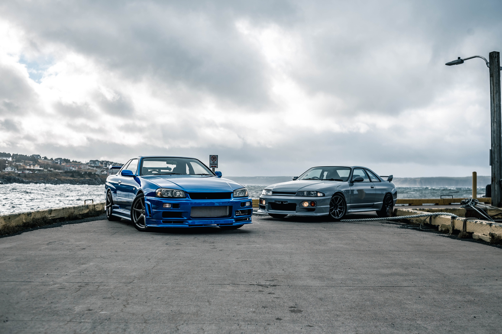
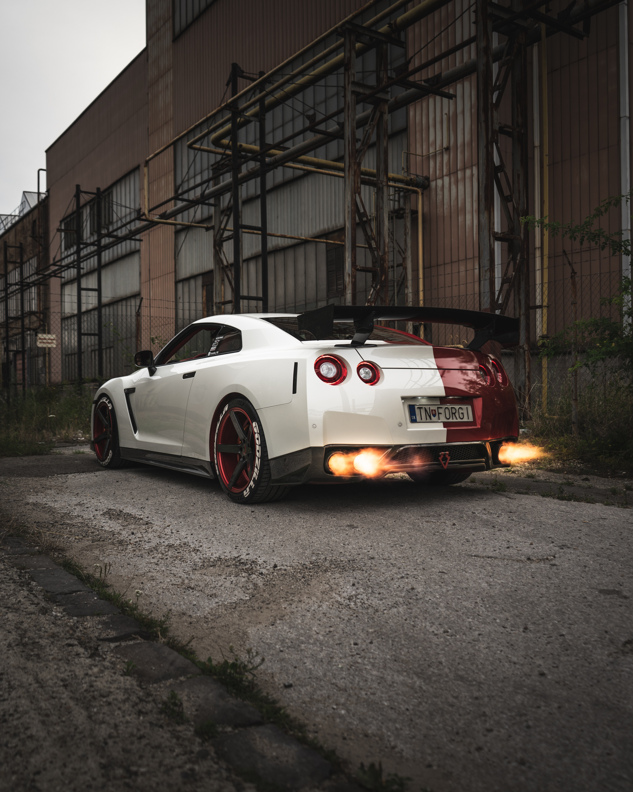
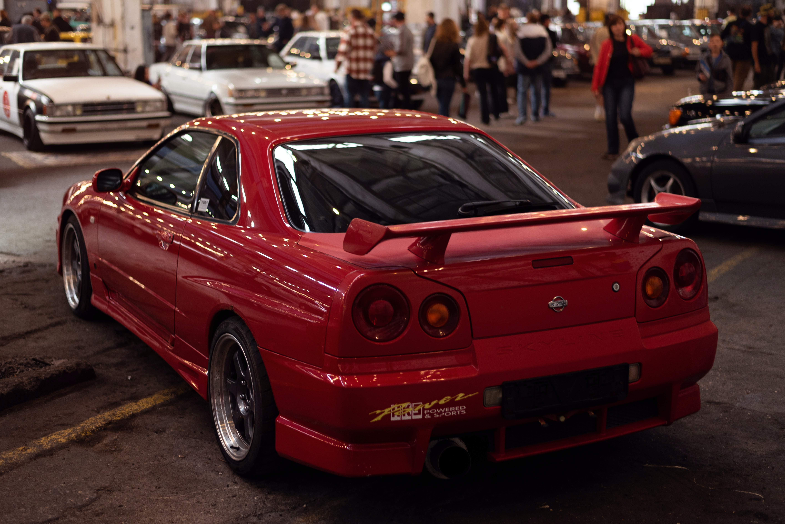

.jpg)
History
The Nissan GT-R's history is a riveting story of engineering ingenuity and a never-ending pursuit of performance excellence. This legendary sports car first appeared in the 1960s as the Nissan Skyline GT-R, achieving popularity in the Japanese racing scene. However, it wasn't until 1989, when the R32 Skyline GT-R debuted, that the world took note. It dominated the motorsport circuit with its cutting-edge technology, including the innovative ATTESA E-TS all-wheel-drive system and the powerful RB26DETT engine, gaining the nickname "Godzilla" for its ability to demolish the competition. The GT-R progressed throughout the years through the R33 and R34 versions, cementing its position as a performance legend. It dropped the Skyline moniker in 2007 and became the independent Nissan GT-R, sporting a handmade engine and breathtaking acceleration. The GT-R's illustrious history demonstrates Nissan's dedication to pushing the frontiers of automotive engineering and providing adrenaline-pumping driving experiences.
Accomplishments
The list of achievements for the Nissan GT-R reads like a sports car hall of fame. It has continuously shown its dominance on the track with several victories in important racing events like as the Nürburgring 24 Hours and the Super GT series. Notably, the GT-R's performance prowess won it a spot on the coveted "Top Gear" lap time leaderboard, where it left an indelible mark as one of the fastest production cars to ever conquer the show's iconic test track. Aside from its racing performance, the GT-R has gained critical acclaim for its technological breakthroughs, such as the utilization of superior aerodynamics and cutting-edge electronics, transforming it into a true marvel of automotive engineering. This vehicle has not only reinvented what is possible on the road, but it has also left an indelible mark on the world of high-performance cars.
Models
The Nissan GT-R has evolved dramatically over the years, with each succeeding model pushing the limits of performance and technology. It all started with the 1989 R32 Skyline GT-R, which became an instant legend in the world of motorsports. The R33 and R34 models that followed honed its capabilities even more, cementing its position as a legendary sports car. The GT-R debuted as a standalone model in 2007, with a 3.8-liter twin-turbocharged V6 engine and the mind-boggling ATTESA E-TS all-wheel-drive system. Subsequent generations, particularly the Nismo variation, have improved the GT-R's performance with more power, aerodynamics, and handling. Each model marks a chapter in the GT-R's illustrious history, demonstrating Nissan's unrelenting dedication to automotive innovation and perfection.